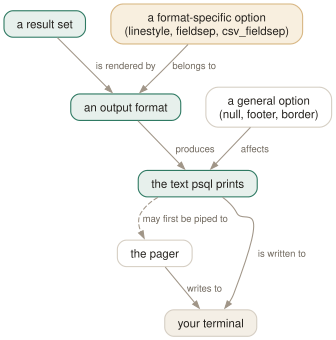

Day 05
Readable output
Twenty-two printing options, the three that change your life, and which ones your format ignores.
By the end of today you can
- stop confusing NULL with an empty string in every result you read from now on
- choose between aligned, wrapped and expanded output on purpose rather than by accident
- predict which printing options a given format will silently ignore
The default output is lying to you about NULL
psql prints nothing at all for a NULL. In a padded, aligned column that is indistinguishable from an empty string — so the default rendering of a result set destroys a distinction the database went to some trouble to keep. This is the first thing to change, and it takes one line.
testdb=# SELECT customer, total FROM app.orders ORDER BY id;
customer | total
----------+-------
acme | 10.50
globex | 99.99
| 0.00
(3 rows)
testdb=# \pset null '(null)'
Null display is "(null)".
testdb=# SELECT customer, total FROM app.orders ORDER BY id;
customer | total
----------+-------
acme | 10.50
globex | 99.99
(null) | 0.00
(3 rows)

linestyle is for aligned and wrapped, fieldsep for unaligned, csv_fieldsep for CSV, tableattr for HTML. Nothing warns you, so the habit is to set the format first and its options second.Three formats you will actually use
\pset format takes nine values and unique abbreviations, so \pset format u is enough for unaligned. Four of the nine are markup for documents — html, asciidoc, latex, troff-ms — and produce fragments rather than whole documents. Ignore them until the day you need one. The ones that matter:
aligned- the default: padded columns, a header, a row count. For reading.
wrapped- aligned, but long values are broken to fit a target width. For reading data with one chatty column.
unaligned- one row per line, columns joined by
fieldsep(default|). For piping into other programs — thoughcsvis safer, because unaligned does nothing special when the separator appears inside a value.
Wrapping is visible once you know the marks. A . in the right margin means “this value continues”, and a matching . appears in the left margin of the continuation line:
testdb=# \pset format wrapped
testdb=# \pset columns 40
testdb=# SELECT 'a'||repeat(' word',12) AS text_col, 1 AS n;
text_col | n
------------------------------------+---
a word word word word word word wo.| 1
.rd word word word word word |
(1 row)
Expanded mode, and the setting that makes it bearable
A row with twelve columns does not fit on a screen, and no amount of wrapping helps. \x turns the table on its side: one record at a time, column names down the left.
testdb=# \x
Expanded display is on.
testdb=# SELECT * FROM app.orders WHERE id = 1;
-[ RECORD 1 ]---------------------------
id | 1
customer | acme
total | 10.50
placed | 2026-09-10 10:47:47.716038+00
The useful setting is neither on nor off but auto: go vertical only when the result has more than one column and is wider than the screen. Narrow results stay as tables, wide ones stop wrapping into soup, and you never toggle anything again. It works only in aligned and wrapped; elsewhere it behaves as off.
Two smaller things belong here. Most describe commands accept an x suffix — \dt+x, \df+x — which is expanded mode for one listing, and the reason for yesterday's odd placement rule. And \gx sends the current buffer with expanded mode forced for that one query, which is what you want when a single row surprises you.
Borders, lines, and the pager
border is a number: 0 for no lines, 1 for internal dividers (the default), 2 for a full frame. linestyle chooses the characters — ascii or unicode box-drawing — and applies only to aligned and wrapped. Together they are the whole of “make this look good in a screen share”:
testdb=# \pset linestyle unicode
testdb=# \pset border 2
testdb=# SELECT * FROM my_table LIMIT 2;
┌───────┬────────┐
│ first │ second │
├───────┼────────┤
│ 1 │ one │
│ 2 │ two │
└───────┴────────┘
(2 rows)
Three further options pick single or double lines for the frame, the column dividers and the header rule independently (unicode_border_linestyle, unicode_column_linestyle, unicode_header_linestyle). They are pure decoration, and they are the fastest way to make a slide look like you know what you are doing.
The pager deserves a mention because it is the option people disable in irritation and then miss. on — the default — means “page only when the output does not fit”; always pages everything; off never does. pager_min_lines adds a floor, so short-but-too-wide results stop opening a pager for four rows. psql uses $PSQL_PAGER or $PAGER, and there is a separate $PSQL_WATCH_PAGER for Day 13's \watch.
Today's habit
Set \pset null '(null)' and \x auto right now, in the session you have open. Live with them for a day. Tomorrow you learn where to put them so that you never type them again — and that is the day psql starts feeling like your tool rather than the one that ships with the server.
One more thing to notice: everything today was a session setting, lost when you quit. That is the problem ~/.psqlrc exists to solve.
New vocabulary
Commands
| Command | Does |
|---|---|
\pset | With no argument, print all 22 printing options and their current values. |
\x | Toggle expanded mode. \x auto is the setting worth keeping. |
\a \t \f \C \H | Shortcuts kept for compatibility: format, tuples_only, fieldsep, title, HTML. |
Options
| Option | Does |
|---|---|
format | aligned (default), wrapped, unaligned, csv, html, asciidoc, latex, troff-ms. |
expanded | on / off (default) / auto — vertical records, always or only when too wide. |
null | What to print for NULL. Default is nothing, which reads exactly like an empty string. |
border | 0 none, 1 dividing lines (default), 2 a full frame. |
linestyle | ascii (default) or unicode. Aligned and wrapped only. |
footer | The (n rows) line. off removes it. |
columns | Target width for wrapped, and the threshold for expanded auto. 0 means use $COLUMNS. |
pager | off / on (default, meaning “only when it does not fit”) / always. |
xheader_width | full (default) / column / page / an integer — how long the record rule may be. |
Drillsdo these in a real terminal, today
Self-check
Answer out loud first, then unfold.
A report shows an empty cell. Is that a NULL, an empty string, or a string of spaces? How do you find out in one command?
You cannot tell, and that is the default. psql prints nothing for NULL, so NULL, '' and ' ' all render as blank space inside a padded column.
\pset null '(null)' — or anything else distinctive — separates the first from the other two permanently. The manual page's own suggestion is '(null)', and it is the single highest-value line you will put in ~/.psqlrc tomorrow. To separate an empty string from spaces you still need length() or quote_literal().
You set \pset expanded auto and then switch to \pset format csv. Wide rows stop going vertical. Bug?
No — documented. expanded auto is only effective in the aligned and wrapped formats; in every other format it behaves as if expanded were off. Which is sensible, since a vertical CSV would not be CSV.
The general rule is that printing options belong to formats, and psql accepts them regardless. linestyle means nothing outside aligned and wrapped, fieldsep means nothing outside unaligned, csv_fieldsep means nothing outside CSV, and tableattr means nothing outside HTML and latex-longtable. You get a cheerful confirmation message either way.
What is the difference between aligned and wrapped, and when does wrapped behave exactly like aligned?
wrapped is aligned plus a target width: values too long for the column are broken across lines, with a . in the right margin of the first line and again in the left margin of the next. The target comes from \pset columns, or from $COLUMNS/the detected screen width when columns is 0.
It gives up when the column headers alone exceed the target, because psql will not wrap a header — so a fifteen-column query in a narrow terminal comes out exactly as it would in aligned. There is one more consequence of columns: at 0, wrapping applies to screen output only; set it to a number and file and pipe output are wrapped too, which is rarely what you want.
In an expanded result, the -[ RECORD 1 ]----- rule runs the full width of your widest value — hundreds of characters for one long text column. How do you shorten it without losing the value?
\pset xheader_width column truncates the rule to the width of the first column; page truncates it to the terminal width; an integer sets it exactly. The default is full, which is what produces the hundred-dash line.
The values are untouched — only the header rule between records is shortened. It is a small option and it makes expanded mode usable for rows containing one long JSON or SQL column, which is exactly when you reach for expanded mode.
Cheat sheet
Set the format first, its options second. A misplaced option is accepted and ignored.
\pset -- show all 22 options and their values
\pset null '(null)' -- stop confusing NULL with '' <- do this one
\pset expanded auto -- vertical only when too wide <- and this one
\x \gx -- toggle expanded / force it for one query
\pset format aligned|wrapped|unaligned|csv|html|asciidoc|latex|troff-ms (u = unaligned)
\pset border 0|1|2 \pset linestyle ascii|unicode -- aligned & wrapped only
\pset columns 100 -- wrapped target width; also the expanded-auto threshold
\pset footer off -- lose the (n rows) line
\pset xheader_width column -- shorten the -[ RECORD n ]- rule
\pset pager off|on|always -- bare \pset reports these as 0|1|2
-- margins: . = value wrapped here + = the value contains a newline
Everything through Day 05
Keys
| Key | Does |
|---|---|
| C-c | Abandon the line you are typing and empty the query buffer. |
| C-d | End the session — but only when the buffer is empty. |
Commands
| Command | Does |
|---|---|
psql | Connect with the defaults and start an interactive session. |
; | Dispatch the buffer. Not a meta-command — SQL's own statement terminator. |
\g | Dispatch the buffer, exactly as a semicolon does. |
\p | Print the buffer without sending it. \print in full. |
\r | Reset: throw the buffer away. \reset in full. |
\e | Edit the buffer in $EDITOR; on exit it is re-parsed and run. |
\w file | Write the buffer to a file instead of sending it. |
\; | Append a semicolon to the buffer without dispatching it. |
\? | Every meta-command, in twelve groups. 121 of them in 18.6. |
\h SELECT | Syntax for one SQL command. \h alone lists what it knows. |
\q | Quit. |
\c dbname | Reconnect to another database, reusing host, port and user. |
\c - user | Reconnect as another user. A dash means “leave that one as it is”. |
\c -reuse-previous=on ... | Merge a conninfo string onto the current parameters. |
\conninfo | A twelve-row table describing the live connection. |
\password | Change a password without it reaching your history or the server log. |
\encoding | Show the client encoding, or set it. |
\d | Bare: tables, views, materialized views, sequences and foreign tables. |
\d my_table | Describe one relation: columns, types, nullability, defaults, indexes, constraints. |
\d+ my_table | Adds storage, compression, stats target and per-column comments. |
\dt | Tables. The letters combine — \dti lists tables and indexes. |
\di \dv \dm \ds \dE | Indexes, views, materialized views, sequences, foreign tables. |
\dn | Schemas. \dn+ adds permissions and comments. |
\l | Databases, with owner, encoding, locale provider and privileges. |
\dP | Partitioned tables and indexes; add n to include non-root ones. |
\dx | Installed extensions; \dx+ lists everything each one owns. |
\df pattern | Functions, with result type, argument types and kind. |
\df pattern t1 t2 | Extra arguments are type patterns, matched positionally. |
\sf name | The function's source as CREATE OR REPLACE. \sf+ numbers the body. |
\sv name | The same for a view. \ev and \ef edit rather than show. |
\du | Roles and their attributes. \dg is the same command. |
\drg | Role grants: who is a member of what, with ADMIN/INHERIT/SET. |
\dp | Access privileges on tables, views and sequences. \z is the same command. |
\ddp | Default privileges — what future objects will be created with. |
\dconfig | Server parameters set to non-default values. \dconfig * for all of them. |
\drds | Settings attached to a role, a database, or the pair. |
\dT \do \da | Types, operators and aggregates — same grammar, rarer questions. |
\pset | With no argument, print all 22 printing options and their current values. |
\x | Toggle expanded mode. \x auto is the setting worth keeping. |
\a \t \f \C \H | Shortcuts kept for compatibility: format, tuples_only, fieldsep, title, HTML. |
Options
| Option | Does |
|---|---|
-h -p -U -d | Host, port, user, database. -d also takes a whole conninfo string. |
-w -W | Never prompt for a password / always prompt. Both persist across \c. |
-l | List databases and exit. Connects to postgres unless told otherwise. |
PGHOST PGPORT PGUSER PGDATABASE | libpq's defaults for the four parameters. |
PGPASSFILE | The password file. Default ~/.pgpass, and it must be mode 0600. |
PGSERVICEFILE | Named connection recipes. Default ~/.pg_service.conf. |
S | Include system objects: \dtS. Supplying any pattern does this too. |
+ | More columns — and a size lookup per relation, so it is not free. |
x | Expanded output for this listing only. Goes after S or +, never straight after \d. |
a n p t w | Function-kind filters for \df: aggregate, normal, procedure, trigger, window. |
format | aligned (default), wrapped, unaligned, csv, html, asciidoc, latex, troff-ms. |
expanded | on / off (default) / auto — vertical records, always or only when too wide. |
null | What to print for NULL. Default is nothing, which reads exactly like an empty string. |
border | 0 none, 1 dividing lines (default), 2 a full frame. |
linestyle | ascii (default) or unicode. Aligned and wrapped only. |
footer | The (n rows) line. off removes it. |
columns | Target width for wrapped, and the threshold for expanded auto. 0 means use $COLUMNS. |
pager | off / on (default, meaning “only when it does not fit”) / always. |
xheader_width | full (default) / column / page / an integer — how long the record rule may be. |